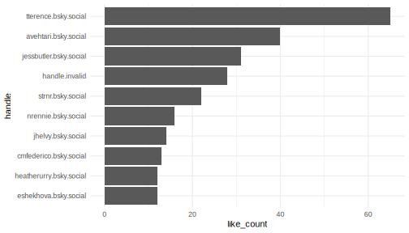

Analyzing Feeds on Blue Sky
On Blue Sky users have the ability to create custom feeds based on
specific keywords. These feeds aggregate content, for instance, a user
might create a feed around the hashtag #rstats to gather
all relevant content about. Let’s delve into the dynamics of such feeds
created by users.
Retrieving a Feed
Our starting point is to extract the posts from a feed. We’re focusing on a feed curated by “andrew.heiss.phd”.
# Fetching the feed posts
feeds <- get_feeds_created_by(actor = "andrew.heiss.phd") |>
dplyr::glimpse()
#> Rows: 4
#> Columns: 20
#> $ uri <chr> "at://did:plc:2…
#> $ cid <chr> "bafyreidmykchh…
#> $ did <chr> "did:web:skyfee…
#> $ creator_did <chr> "did:plc:2zcfjz…
#> $ creator_handle <chr> "andrew.heiss.p…
#> $ creator_displayName <chr> "Andrew Heiss",…
#> $ creator_avatar <chr> "https://cdn.bs…
#> $ creator_viewer_muted <lgl> FALSE, FALSE, F…
#> $ creator_viewer_blockedBy <lgl> FALSE, FALSE, F…
#> $ creator_viewer_following <chr> "at://did:plc:n…
#> $ creator_viewer_followedBy <chr> "at://did:plc:2…
#> $ creator_description <chr> "Assistant prof…
#> $ creator_indexedAt <chr> "2024-01-26T00:…
#> $ displayName <chr> "Nonprofit Stud…
#> $ description <chr> "A feed for non…
#> $ avatar <chr> "https://cdn.bs…
#> $ likeCount <int> 20, 81, 0, 102
#> $ indexedAt <chr> "2023-09-20T21:…
#> $ created_at <dttm> 2023-09-20 21:1…
#> $ viewer_like <chr> NA, NA, NA, "a…
# Filtering for a specific keyword, for example "#rstats"
rstat_feed <- feeds |>
filter(displayName == "#rstats")
# Extracting posts from this curated feed
rstat_posts <- get_feed(rstat_feed$uri, limit = 200) |>
dplyr::glimpse()
#> Rows: 200
#> Columns: 18
#> $ uri <chr> "at://did:plc:vgvueqvmbqgoy…
#> $ cid <chr> "bafyreie2uewopzpmtxwil3a5p…
#> $ author_handle <chr> "cranberriesfeed.bsky.socia…
#> $ author_name <chr> "CRAN Package Updates Bot",…
#> $ text <chr> "CRAN updates: lava MissMec…
#> $ author_data <list> ["did:plc:vgvueqvmbqgoyxtc…
#> $ post_data <list> ["app.bsky.feed.post", "20…
#> $ embed_data <list> <NULL>, <NULL>, ["app.bsky…
#> $ reply_count <int> 0, 0, 0, 0, 0, 0, 0, 0, 2, …
#> $ repost_count <int> 0, 0, 0, 0, 0, 0, 0, 0, 0, …
#> $ like_count <int> 0, 0, 0, 0, 0, 0, 0, 0, 6, …
#> $ indexed_at <dttm> 2024-03-05 13:02:18, 2024-…
#> $ in_reply_to <chr> NA, NA, NA, NA, NA, NA, NA,…
#> $ in_reply_root <chr> NA, NA, NA, NA, NA, NA, NA,…
#> $ quotes <chr> NA, NA, NA, NA, NA, NA, NA,…
#> $ tags <list> "rstats", "rstats", "rstat…
#> $ mentions <list> <NULL>, <NULL>, <NULL>, <N…
#> $ links <list> <NULL>, <NULL>, <NULL>, <N…Identifying Top Contributors
Who are the leading voices within a particular topic? This analysis
highlights users who are frequently contributing to the
#rstats feed.
library(ggplot2)
# Identifying the top 10 contributors
rstat_posts |>
count(handle = author_handle, sort = T) |>
slice(1:10) |>
mutate(handle = forcats::fct_reorder(handle, n)) |>
ggplot(aes(handle, n)) +
geom_col() +
coord_flip() +
theme_minimal()
Top 10 #rstats contributors
Recognizing Influential Voices
Volume doesn’t always translate to influence. Some users may post less frequently but their contributions resonate deeply with the community.
# Identifying top 10 influential voices based on likes
rstat_posts |>
group_by(author_handle) |>
summarize(like_count = sum(like_count)) |>
ungroup() |>
arrange(desc(like_count)) |>
slice(1:10) |>
mutate(handle = forcats::fct_reorder(author_handle, like_count)) |>
ggplot(aes(handle, like_count)) +
geom_col() +
coord_flip() +
theme_minimal()

Top 10 #rstats contributors based on likes
Most Famous #rstats skeet
# Finding the standout post in the rstats feed
rstat_posts |>
mutate(total_interactions = reply_count + repost_count + like_count) |>
arrange(desc(total_interactions)) |>
slice(1) |>
select(author_handle, total_interactions, text) |>
dplyr::glimpse() |>
pull(text)
#> Rows: 1
#> Columns: 3
#> $ author_handle <chr> "omearabrian.bsky.soci…
#> $ total_interactions <int> 42
#> $ text <chr> "New paper! \"dentist:…
#> [1] "New paper! \"dentist: Quantifying uncertainty by sampling points around maximum likelihood estimates\". Easy thing to plug into R workflows for getting better confidence intervals and detecting potential identifiability issues. #OpenAccess paper at doi.org/10.1111/2041...\n\n#Rstats #OpenSource"